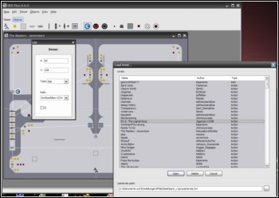

Hello, I registered here some time ago to present you
NED Plus (V. 0.7)
an alternative Map Editor for the game N.
I didn't post it yet because it thought my english was too bad. I'm 13 years old (when I programmed it I was only 12) and I live in Germany.
Well, here are some
Features:
Here is a
Screenshot
of NED Plus (This one is from version 0.6, but the interface is nearly the same):
(Click here to enlarge)
I've also made a NED-Plus page on my website where you can download NED Plus. At the moment it's only available in german, but i'm going to make an english version, too.
Bugs & Co
If you want to load directly from the userlevels.txt, the userlevels.txt has to be 100% valid! If it isn't valid NED Plus can eventually crash the whole file when you save. So you should really make a backup before!
There is a "Test in NED" entry in the menu. The first time you click it you have to select the n_v14.exe file. Then NED Plus will execute N and press to get in ned (please report me if this works on english keyboards, too). It will copy the map data to the clipboard, but you will still have to paste it yourself and load it. Then you can test your map in ned. This doesn't always work!
NED Plus is only available for Windows! There will never be a version for Linux or Mac! Don't ask for it!
Download
To download NED Plus, please visit my NED Plus-page or click here! (about 2.4 mb, installer)
NED Plus (V. 0.7)
an alternative Map Editor for the game N.
I didn't post it yet because it thought my english was too bad. I'm 13 years old (when I programmed it I was only 12) and I live in Germany.
Well, here are some
Features:
- You can directly save and load from the userlevels.txt
- You can add some objects in groups
- You can use 1/2, 1/4, full snap and of course free hand mode (without snap)
- You can easily edit the name author andthe category of a map
- You can edit multiple maps at the same time ("MDI")
- There are 4 different modes to copy the map into the clipboard: the whole map with or without map info (e.g. author name), only the tileset or only the objects
- MUCH faster loading of N maps (only in the editor of course!)
- You can edit objects after you have already added them
- Different dialogs for each type of object
- You can easily change the angle and the power of launch pads
- You can invert, "round" and fill the tileset
- You can delete all objects at the same time
- You can directly load maps from the clipboard
- You can configure the guide lines
- While placing an object the object is seen under the cursor. This is useful for objects which dont appear directly under the cursor like oneway platforms.
- You can simply change the direction of objects with your mouse wheel. (But also with q, w, a, s and the cursor keys)
- going-through tiles
- those buggy tiles which throw you away (like in "bugs bugs bugs - the collectors edition" down on the right side)
- Drone-Eyes
Here is a
Screenshot
of NED Plus (This one is from version 0.6, but the interface is nearly the same):

(Click here to enlarge)
I've also made a NED-Plus page on my website where you can download NED Plus. At the moment it's only available in german, but i'm going to make an english version, too.
Bugs & Co
If you want to load directly from the userlevels.txt, the userlevels.txt has to be 100% valid! If it isn't valid NED Plus can eventually crash the whole file when you save. So you should really make a backup before!
There is a "Test in NED" entry in the menu. The first time you click it you have to select the n_v14.exe file. Then NED Plus will execute N and press to get in ned (please report me if this works on english keyboards, too). It will copy the map data to the clipboard, but you will still have to paste it yourself and load it. Then you can test your map in ned. This doesn't always work!
NED Plus is only available for Windows! There will never be a version for Linux or Mac! Don't ask for it!
Download
To download NED Plus, please visit my NED Plus-page or click here! (about 2.4 mb, installer)


 )
)